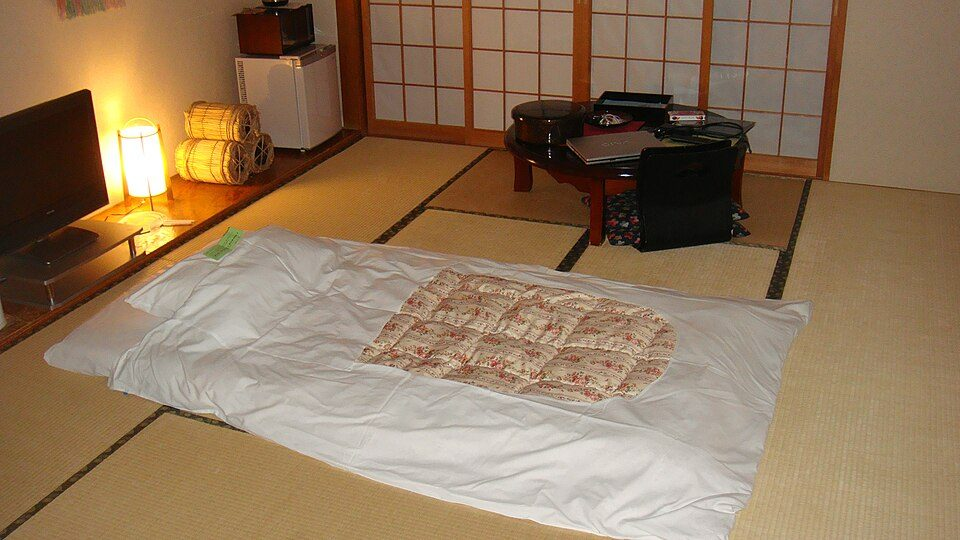
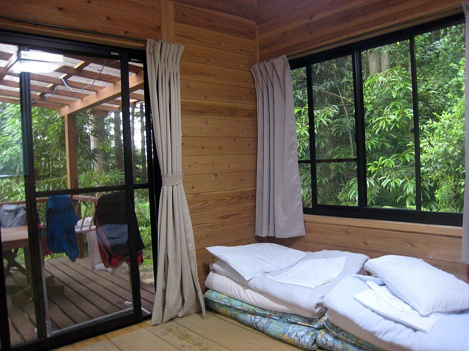

トップ › 暮らし・健康
国の睡眠ガイドに沿った、睡眠の質を上げる方法
要点まとめ
- 成人は6時間以上を目安に、必要な睡眠時間を確保する[1]
- 朝起きたときに休まった感覚（睡眠休養感）が、質の目安[1]
- 寝る約2時間前から強い光を避け、スマホは寝室に持ち込まない[1]
- カフェインは1日400mgまで。夕方以降と寝酒は控える[1]
- 休日の寝だめで、睡眠を「ためる」ことはできない[1]

和室に敷いた布団（イメージ）
厚生労働省は2024年2月に「健康づくりのための睡眠ガイド2023」をまとめ、2024年9月に一部を修正しています。2026年11月5日時点で、これより新しい版は公開されていません[2]。この記事では、ガイドと厚生労働省の解説サイト（e-ヘルスネット）をもとに、20〜30代の会社員が取り入れやすい工夫をまとめました。病気の診断や治療の助言ではありません。
国の睡眠ガイドの考え方
成人の柱は「時間」と「休養感」の2つ
6時間以上を目安に眠り、休養感を高める[1]
世代ごとの推奨（ガイドの「睡眠の推奨事項一覧」から）[1]
| 世代 | 睡眠時間の目安 | ほかのポイント |
|---|
| 小学生 | 9〜12時間 | 朝は太陽の光を浴び、朝食をとる |
|---|
| 中学・高校生 | 8〜10時間 | 夜ふかしを習慣にしない |
|---|
| 成人 | 6時間以上を目安 | 生活習慣と寝室の環境を見直し、休養感を高める |
|---|
| 高齢者 | 床にいる時間が8時間以上にならないように | 長い昼寝を避け、日中は活動的に過ごす |
|---|
くわしく
- 成人の適正な睡眠時間は、おおよそ6〜8時間と考えられている[1]
- 必要な時間には個人差があり、日中の眠気などで自分で探る[1]
- 夜に眠れる時間は25歳で約7時間、45歳で約6.5時間と短くなる[1]
- 世代を特定の年齢で区切るのは適当でない、とされている[1]
「睡眠休養感」とは
朝目覚めたときに休まった感覚があるかどうか[1]
くわしく
- ガイドは、睡眠休養感を睡眠の質を反映する指標としている[1]
- 休養感が高いほど、心血管疾患の発症率が低い関連がみられた[1]
- 休養感を下げる要因に、寝る直前の夕食や朝食抜きなどがある[1]
- 必要以上に長く床にいると、かえって眠りの質が下がる[1]
日本人はどれくらい眠れているか
40〜50代は、4〜5割が6時間未満
20〜30代でも、3〜4割が6時間未満だった[3]
1日の睡眠時間が6時間未満の人（2024年） （%。「5時間未満」と「5〜6時間未満」の合計を筆者が計算）[3]
男性 20代29.7
男性 30代40.1
男性 40代45.5
男性 50代48.3
女性 20代32.4
女性 30代33.7
女性 40代41.4
女性 50代49.1
くわしく
- 睡眠で休養がとれている人は79.6%。20〜59歳では73.0%[3]
- 国の目標は、休養がとれている人80%（2032年度）[4]
- 睡眠時間が十分な人の目標は60%（2032年度）[4]
- 2024年は大規模調査で集計方法が違い、前年との単純比較は避ける
1日の流れで見る工夫
朝7時に起き、夜0時に寝る人の例
時刻は例。ガイドの「就寝の○時間前」を当てはめたもの
- 7:00
起きたらカーテンを開け、朝の光を浴びる
朝日の強い光で、体内時計がリセットされる[1]
- 7:30
朝食をとる
朝食を抜くと、体内時計が遅れ、休養感も下がる[1]
- 日中
明るい場所で過ごし、体を動かす
日中に光を多く浴びると、夜に寝つきやすくなる[1]
- 15:00まで
コーヒーなどは早めの時間に
夕方以降のカフェインは、夜の睡眠に影響しやすい[1]
- 20:00〜22:00
運動は寝る2〜4時間前までに終える
寝る前1時間以内の激しい運動は、眠りを妨げることがある[1]
- 22:00〜23:00
お風呂につかり、照明を暗めにする
入浴は寝る1〜2時間前。約2時間前から強い光を避ける[1]
- 23:00〜
家事や仕事から離れてリラックス
寝床に就く前に、少なくとも1時間はくつろぐ[1]
- 0:00
眠くなってから寝床に入る
眠れないときは一度寝床を離れ、眠くなってから戻る[1]
くわしく
- 7時起床・0時就寝だと、床にいる時間は7時間
- 20〜30代の床にいる時間は7時間程度とされる[1]
- 休日も、起きる時刻をなるべく平日とそろえる[5]
項目ごとのポイント

朝は窓から光を入れる（イメージ）
光とスマホ
スマホは寝室に持ち込まず、暗くして寝る[1]
くわしく
- 眠りを促すメラトニンは、寝る約2時間前から出始める[1]
- その後に強い光を浴びると、メラトニンが抑えられ寝つきが悪くなる[1]
- スマホは画面を近くで見るため、パソコンより光の量が多いと考えられる[1]
- 暖色にしたLEDにもブルーライトが多く含まれる[1]
- 寝ている間は、暗い光でも途中で目が覚めやすくなる[1]
寝室の温度と入浴
寝る1〜2時間前に、ぬるめのお湯につかる[1]
くわしく
- 夏は、寝室をエアコンで涼しく保つことが重要とされる[1]
- 冬は、寝る前に過ごす部屋を暖かくしておく[1]
- 極端に熱いお湯は、かえって寝つきを妨げる可能性がある[1]
- 40℃で10〜15分つかると、深部体温が上がるとされる[6]
- 湿度は40〜70%くらいがよいといわれている[7]
カフェイン
1日400mg（コーヒー約700cc）を超えないようにする[1]
飲み物のカフェイン量 （mg／100ml）[1]
玉露160
コーヒー60
インスタントコーヒー57
紅茶30
せん茶20
ウーロン茶20
くわしく
- 400mgを超えると、朝に飲んでも睡眠に影響する可能性がある[1]
- 107mgを超えると、寝る約9時間前でも影響したという分析がある[1]
- エナジードリンクは1本あたり36〜150mgと、製品で差が大きい[1]
- 麦茶やそば茶など、カフェインのない飲み物に置き換える方法もある[1]
- 入れ方で量は変わる。表の値はガイドの表にある条件での値[1]
お酒とたばこ
眠るためのお酒（寝酒）は、睡眠の質を悪くする[1]
くわしく
- お酒は寝つきをよくするが、睡眠の後半の質を大きく悪くする[1]
- 続けると、飲まないと眠れなくなるおそれがある[1]
- ニコチンには目を覚ます作用があり、喫煙しないことが推奨されている[1]
- 加熱式たばこも、ニコチンを含めば同じような影響があると考えられる[1]
運動と食事
息が弾む程度の運動を習慣にし、夜食は控える[1]
くわしく
- 理想は1日60分程度の体の活動。まずは短くても定期的に[1]
- 寝る前の夜食や間食は、体内時計を遅らせる[1]
- 夕食が遅い日は、夕方に主食をとり、帰宅後に軽くおかずを[1]
- 睡眠の質を上げる特定の食品や運動の種類は、まだ分かっていない[1]
昼寝
眠い日は、午後の早い時間に短く[8][6]
くわしく
- 旧指針（2014年）は、午後の早い時刻に30分以内の昼寝としていた[8]
- e-ヘルスネットは、15分程度で十分としている[6]
- 2023年版のガイドには、成人の昼寝の推奨は書かれていない
よくある誤解
「休日に寝だめすればいい」
眠りをためることはできないとされている[1]
くわしく
- 休日に長く眠る必要があるのは、平日の睡眠不足のサイン[1]
- 平日6時間未満の人は、寝だめをしても寿命が縮むリスクが高かった[1]
- 平日6時間以上でも、2時間以上の寝だめでリスクは下がらなかった[1]
- 週末のたびに時差のある所へ行くのに似て、社会的時差ボケと呼ばれる[1]
「8時間寝ないといけない」
目安は6時間以上。必要な時間は人によって違う[1]
くわしく
- 10時間を超える睡眠が必要な人もいる[1]
- 短くてよいという意味ではなく、6時間未満はリスクの報告が多い[1]
- 早く布団に入りすぎると、寝つきが悪くなり途中で目が覚めやすい[1]
「睡眠アプリの数字は正確」
安い機器は、精度が十分とは言いがたいかもしれない[1]
くわしく
- 自分で答える睡眠時間は、床にいた時間に近くなりやすい[1]
- 数字より、朝の休養感と日中の眠気も合わせて見る[1]
医師に相談する目安
こんなときは医療機関へ
生活を見直しても不調が続くなら、医師に相談する[1]
くわしく
- やせていても、あごの形などで無呼吸になることがある[1][12]
- 起きたときの強い口の渇きや頭痛も、無呼吸のサインとされる[12]
- 日本睡眠学会は、専門医療機関の一覧を公開している[13]
- 睡眠の問題が続くと、生活習慣病のリスクを高めるとされる[14]
自己判断で済ませない
この記事は国のガイドの内容を紹介するもので、診断や治療の代わりにはなりません。強い眠気がある日の運転は避け、気になる症状が続く場合は医療機関に相談してください（筆者の見解）。
今回確認できなかった点
- 2024年9月18日の一部修正で、ガイドのどこが変わったか
- スマホの夜間モードやブルーライトカットの効果についての公的な評価
- 国民健康・栄養調査の報告書本体の詳しい表（今回は結果の概要だけを確認した）
出典（14件）
閲覧日はいずれも2026年11月5日
- 健康づくりのための睡眠ガイド2023（2024年9月18日一部修正）（厚生労働省）
- 睡眠対策（厚生労働省）
- 令和6年国民健康・栄養調査結果の概要（厚生労働省）
- 国民の健康の増進の総合的な推進を図るための基本的な方針（健康日本21（第三次））（厚生労働省）
- Good Sleepガイド（ぐっすりガイド）成人版（厚生労働省）
- 快眠と生活習慣（厚生労働省 e-ヘルスネット）
- 不眠症（厚生労働省 e-ヘルスネット）
- 健康づくりのための睡眠指針2014（旧指針）（厚生労働省）
- 睡眠時無呼吸症候群 / SAS（厚生労働省 e-ヘルスネット）
- 昼間の眠気 – 睡眠不足だけではなく睡眠･覚醒障害にも注意が必要（厚生労働省 e-ヘルスネット）
- 不眠症（Insomnia）（国立精神・神経医療研究センター）
- 睡眠関連呼吸障害（国立精神・神経医療研究センター）
- 睡眠医療認定一覧（日本睡眠学会）
- 睡眠と生活習慣病との深い関係（厚生労働省 e-ヘルスネット）
写真・画像の出典（2件）
- 和室に敷いた布団
写真: David McKelvey／Wikimedia Commons（CC BY 2.0）
- 窓から光が入る部屋
写真: Josh Berglund／Wikimedia Commons（CC BY 2.0）